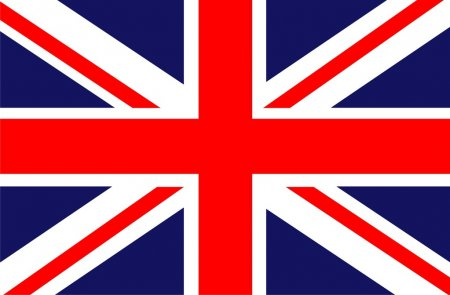

Localizado na Europa Ocidental, o Reino Unido é formado pelas nações da ilha da Grã-Bretanha (Inglaterra, Escócia e País de Gales), a província da Irlanda do Norte (situada na ilha da Irlanda), a Ilha de Man e as Ilhas do Canal. Seu território é banhado pelo Oceano Atlântico, Mar do Norte e Mar da Irlanda. A Inglaterra é a nação mais importante, visto que é a mais habitada e apresenta grande representatividade geopolítica e econômica no cenário mundial.
O Reino Unido possuiu um dos maiores impérios de toda a história, colonizando países nos cinco continentes. Atualmente, a nação mantém relações políticas com suas ex-colônias através da Comunidade Britânica (bloco formado pelo Reino Unido e suas antigas colônias).